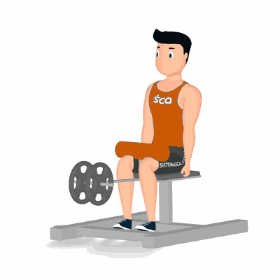

Panturrilha Sentado

Exercício para fortalecimento e hipertrofia dos músculos das panturrilhas.
Ficha Técnica
Tipo: Musculação
Grupo Muscular: Perna
Aparelho: Nenhum
Músculos: Nenhum
Como realizar
- Sente sobre o banco do aparelho;
- Ponta dos pés na plataforma onde os calcanhares deverão ficar para fora da plataforma;
- Joelhos abaixo das almofadas do suporte;
- Manter a coluna ereta e abdome contraído;
- Utilize os músculos da panturrilha para subir os calcanhares o mais alto que conseguir;
- Destrave o aparelho, retorne à posição inicial de forma controlada;
- Suba novamente os calcanhares e repita os movimentos..
 RC STORE
RC STORE